Spells
Although Scribing Patterns allow for spells to be edited before they are cast,the following patterns allow for a spell to modify other spells during the cast.
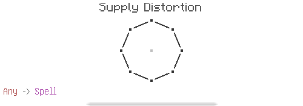Creates a new spell fragment which returns the previously provided fragment when executed.
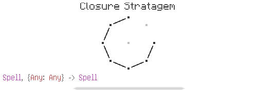Replaces the keys of the map that are in the given spell with the value they map to.
Any values anywhere in the given spell will be replaced.This could be constants in glyphs, patterns, and inner circles,but also entire subtrees of the spell.
Values that are a part of inner circles or subspells will also be replaced.
Note: Addresses
Just as elements of a list are accessed by their index,parts of a spell are accessed by their address.An address is a list of integers that forms a path to a specific circle in a spell.
Addresses can be found using Address Revision.
To manually find the address of a circle, start at the central circle in the spell.
Next, find the sub-circle attached to the central circle that is in thepath to the circle you are finding the address of. Take the index of that circle, which is the number of circles that come before it, counterclockwise.
Repeat this process, adding each index to the list until you reach the circle you are finding the address of. The list you constructed is the address tothat circle.
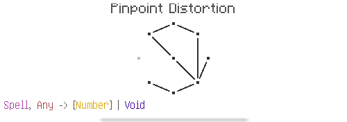Returns the address of the first circle in the given spell with a glyph matching the given fragment.The spell is searched using BFS.
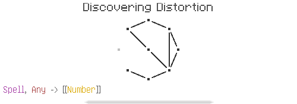Returns a list of all the addresses of circles in the given spell with a glyph matching the given fragment.
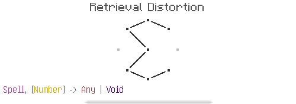Returns the glyph of the circle at the given address.
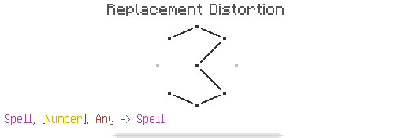Replaces the glyph of the circle at the given address with the given fragment.
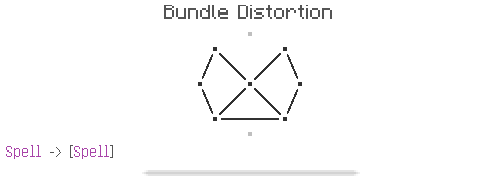Returns the branches of a spell as a list.
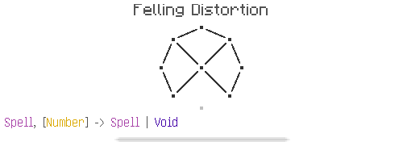Returns the circle (and its branches) at the given address.
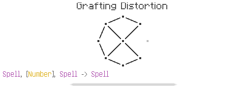Grafts the latter spell into the former, replacing the circle at the given address.
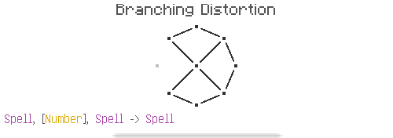Attaches the latter spell to the circle at the given address as a new branch.
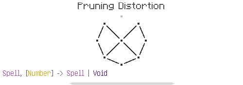Removes the circle at the given address. Returns void if the root node is removed.